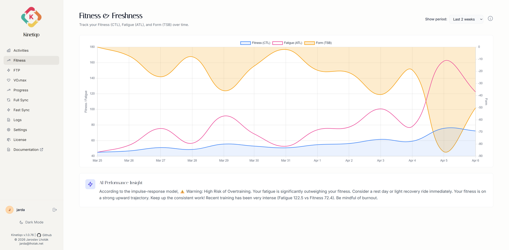

Synchronize your complete Strava activity history into high-performance PostgreSQL, MySQL, or Firebird databases. Analyze power curves, VO₂max trends, CTL/ATL fitness indices, generate printable posters, and manage sync via Web UI or Click CLI.
docker run -d -p 5000:5000 --env-file .env lhotakj/kinetiqo:latest
Designed for cyclists, runners, and multisport athletes who demand complete data sovereignty and zero vendor lock-in.
Fast incremental sync vs full audit reconciliation, SSE progress bars, and DataTables 2.x searchable grid with bulk actions and state persistence.
Explore Activity Grid →Spider charts tracking your best average power over durations from 5s to 1 hour, paired with automated 95% 20-min FTP tracking.
Explore Analytics →Banister impulse-response model for CTL (Fitness), ATL (Fatigue), and TSB (Form), plus Townsend MAP 5-min VO₂max trend analysis.
Explore VO₂max & Fitness →Build high-res activity posters (4:3, 16:9, 1:1) with Playwright PNG export, elevation profiles, and Veloviewer calendar infographics.
Explore Posters & Stats →Inject live stats into Strava activity descriptions using 150+ dynamic placeholders across 6 activity buckets with goal tracking & milestone triggers (🎉).
Explore Strava Templates →Multi-provider Leaflet map with Canvas renderer for thousands of GPS points. Includes Mapy.cz, Thunderforest, MapTiler, CARTO, and server-side OSM proxy.
Explore Maps →Native raw SQL queries with zero ORM overhead across PostgreSQL 12+, MySQL 8 / MariaDB 10+, and Firebird 3.0/4.0/5.0 with automated schema migration.
Explore Multi-DB Engine →Prefer the terminal? Kinetiqo includes a robust Click Command-Line Interface (`python src/kinetiqo.py`) for triggering fast incremental syncs, full Strava audits, database overrides, and headless operations.
View CLI Documentation# Incremental sync
python src/kinetiqo.py sync --fast-sync
# Full audit reconciliation
python src/kinetiqo.py sync --full-sync
# Run web app with custom DB
python src/kinetiqo.py web --database-type postgresqlUnderstand your athletic profile like a pro. Kinetiqo calculates your best mean maximal power output over durations from 5 seconds to 1 hour and computes Banister CTL/ATL/TSB curves.

Turn your epic rides and runs into stunning wall-art posters. Customize fonts, colors, elevation profiles, map tracks, and aspect ratios (4:3, 16:9, 1:1) with pixel-perfect Playwright PNG rendering.